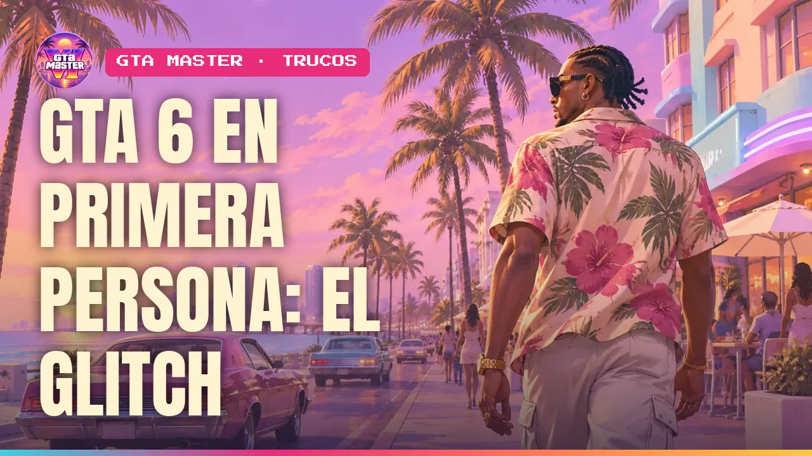

Trucos
Trucos
GTA 6 primera persona: el glitch que la activa en PS5 y Xbox, paso a paso

GTA 6 primera persona: el juego no tiene modo oficial, pero un glitch de cámara lo activa en PS5 y Xbox. Te explicamos el truco paso a paso y sus riesgos.
GTA 6 no tiene modo en primera persona oficial, pero ya hay un glitch que lo activa en PS5 y Xbox. Basta con cambiar una opción del mando, sentarse al volante, sacar el móvil y pulsar un botón en el momento justo: la cámara se queda pegada a los ojos de Jason o Lucia y puedes bajarte del coche y recorrer Vice City como si fuera un shooter.
El descubrimiento es de los cazadores de glitches oneboyler y OrangeGuy, que lo publicaron en YouTube el mismo día del lanzamiento. Desde entonces lo han recogido Dexerto, Kotaku y LADbible, y se ha convertido en el truco más comentado del primer fin de semana. Ojo: no es una función oficial, sino un fallo de la cámara que Rockstar podría corregir en cualquier parche.
¿GTA 6 tiene modo primera persona?
No. Las tres fuentes coinciden en que Grand Theft Auto VI ha salido sin un modo en primera persona dedicado, al contrario de lo que ocurre hoy en GTA V. La cámara es en tercera persona y solo pasa a la vista subjetiva en momentos concretos, como al apuntar con ciertas armas. Kotaku resume que, por ahora, el juego es «estrictamente en tercera persona» salvo esas excepciones.
Lo curioso es que el glitch demuestra que el trabajo está muy avanzado: en los vídeos se ve a los protagonistas caminar y disparar con animaciones propias de esa vista. El propio oneboyler sostiene que las animaciones de armas en primera persona «ya están en el juego», según recoge Dexerto.
Cómo poner GTA 6 en primera persona, paso a paso
Este es el método tal y como lo describen Kotaku, Dexerto y LADbible. Te recomendamos guardar la partida antes de probarlo:
- 1. Ve a Ajustes > Mando y busca la opción del botón del panel táctil (Touch Pad Button). Cámbiala de «Mapa» a «Cámara».
- 2. Súbete a cualquier vehículo y siéntate en el asiento del conductor.
- 3. Saca el móvil del personaje pulsando arriba en la cruceta.
- 4. Guarda el móvil con Círculo e, inmediatamente, pulsa repetidas veces el panel táctil.
- 5. En Xbox, LADbible indica que se guarda el móvil con B y después se pulsa rápido el botón Vista (Back).
- 6. Si no sale a la primera, repítelo: es cuestión de timing. Cuando funciona, al bajarte del coche sigues en primera persona.
Puedes ver la ejecución completa en el vídeo de oneboyler en YouTube, que es el que ha dado la vuelta a la red.
¿Cómo se vuelve a tercera persona?
Aquí las fuentes no se ponen de acuerdo. Según Dexerto y LADbible, no se puede volver a la cámara normal con un botón: hay que cargar la partida guardada. Kotaku, en cambio, asegura que la vista se mantiene hasta que apagas el juego. En cualquier caso, la solución segura es la misma: recargar o cerrar y abrir GTA 6. Por eso insistimos en guardar antes.
| Pregunta | Respuesta corta |
|---|---|
| ¿Hay modo primera persona oficial? | No, a fecha de hoy |
| ¿En qué consolas funciona el glitch? | PS5 y Xbox Series (según LADbible) |
| ¿Qué hay que tocar? | Botón del panel táctil en modo «Cámara» |
| ¿Cómo se quita? | Cargando la partida (o reiniciando el juego) |
| ¿Lo puede quitar Rockstar? | Sí, con un parche futuro |
¿Va a añadir Rockstar un modo en primera persona a GTA 6?
No hay nada oficial. Según Dexerto, Rockstar explicó en su momento que el desarrollo se centró en las animaciones en tercera persona, y ninguno de los medios que han cubierto el glitch recoge una respuesta del estudio. Kotaku apunta que Rockstar no lo ha prometido, aunque cree que podría llegar «en una futura actualización».
Hay un precedente claro: GTA V salió en 2013 sin vista subjetiva y la recibió cerca de un año después, con el salto a PS4 y Xbox One. Entre los jugadores también circula la teoría de que Rockstar se lo guarda para la versión de PC, pero es solo una especulación de la comunidad que LADbible recoge en los comentarios de sus lectores, no un dato.
Lo que sí es probable es que este fallo tenga los días contados. LADbible avisa de que el glitch podría desaparecer con el próximo parche, y Rockstar ya ha distribuido dos actualizaciones silenciosas (la 01.002.000 y la 01.002.001) sin notas de parche públicas, según DLCompare. Si tu consola descarga actualizaciones automáticamente, puede que el truco deje de funcionar sin previo aviso. Ya te contamos cómo gestionar las actualizaciones obligatorias de PS5 para GTA 6.
¿Merece la pena probarlo?
Si te pica la curiosidad, sí: ver Vice City a pie de calle cambia por completo la sensación de escala, y las persecuciones ganan mucha tensión. Pero recuerda que es un fallo: la cámara puede hacer cosas raras en interiores y en algunas animaciones, y no hay garantía de que se comporte bien en misiones. Úsalo para pasear y hacer capturas, no para una misión importante.
Si buscas trucos oficiales, los códigos del juego funcionan de otra manera: te lo explicamos en cómo se desbloquean los trucos de GTA 6 y en la sección de trucos de nuestra guía de GTA 6. Y si quieres dominar el combate de Jason en tercera persona, que es como lo diseñó Rockstar, aquí tienes nuestra guía:
Para repasar a todos los protagonistas, pásate por nuestra sección de personajes de GTA 6. Y para volver a ver Leonida tal y como la presentó Rockstar, este es el tráiler de lanzamiento oficial:


Comentarios
Los comentarios funcionan con Disqus: puedes entrar con Google, Facebook, X o tu email. Al pulsar el botón se conecta con Disqus, que usa sus propias cookies. Más información en nuestra política de privacidad.